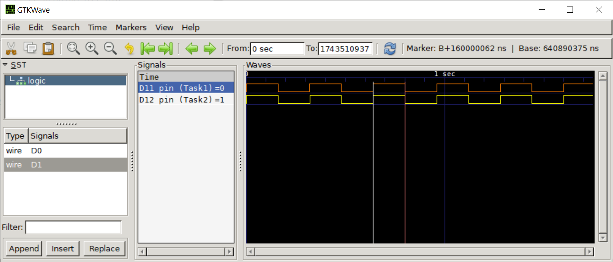
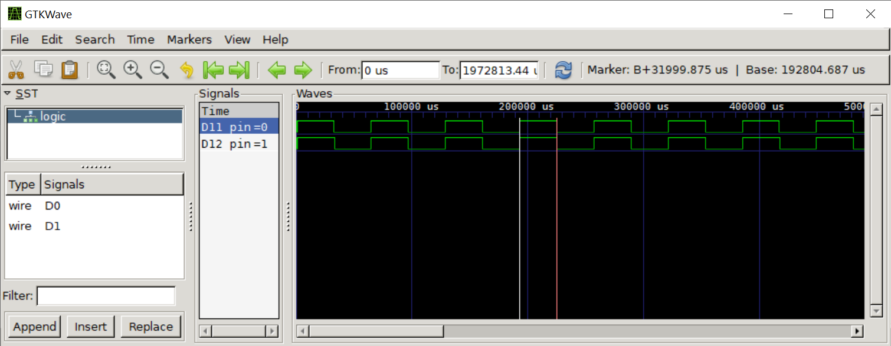

Arduino-FreeRTOS for AVR (Part 4)#
บทความนี้ (ตอนที่ 4) นำเสนอตัวอย่างการเขียนโค้ดโดยใช้ FreeRTOS Library สำหรับบอร์ดไมโครคอนโทรลเลอร์ Arduino ที่ใช้ชิป 8-bit Atmel AVR (เช่น บอร์ด Uno | Nano | MEGA2560) และใช้ซอฟต์แวร์ Arduino IDE ในการเขียนโค้ด รวมถึงสาธิตการจำลองการทำงานด้วย Web-based Wokwi AVR Simulator
Keywords: Arduino, 8-bit AVR MCU, FreeRTOS, Wokwi AVR Simulator
- การใช้ฟังก์ชันเพื่อควบคุมการทำงานของทาสก์
- ตัวอย่างที่ 1: Suspend & Resume Task
- ตัวอย่างที่ 2: Resume Task from ISR
- ตัวอย่างที่ 3: Change Task Priority at Runtime
- ตัวอย่างที่ 4: Resume / Suspend Tasks in Sequence
- ตัวอย่างที่ 5: การใช้คำสั่ง vTaskDelay()
- ตัวอย่างที่ 6: การใช้คำสั่ง vTaskDelayUntil()
▷ การใช้ฟังก์ชันเพื่อควบคุมการทำงานของทาสก์#
จากบทความในตอนที่แล้ว (ตอนที่ 1 | 2 | 3) เราได้เห็นตัวอย่างการเขียนโค้ด Arduino Sketch สำหรับ Arduino Boards (AVR MCU) ใช้งานร่วมกับไลบรารี Arduino-FreeRTOS Library และได้ลองใช้ Web-based Wokwi Simulator และ Web-based GDB-AVR debugger เพื่อจำลองการทำงานของโค้ดและตรวจสอบการทำงาน
บทความนี้นำเสนอเนื้อหาเกี่ยวกับการควบคุมการทำงานของทาสก์ (Task Control) เช่น การหยุดชั่วคราวหรือให้ทำงานต่อ (Task Suspend & Resume) การเปลี่ยนระดับความสำคัญของทาสก์ เป็นต้น
ลองมาดูตัวอย่างฟังก์ชันพื้นฐานของ FreeRTOS ที่เกี่ยวข้องกับการทำงานของทาสก์ (Task Control Functions)
xTaskCreate(...)สร้างทาสก์ใหม่vTaskDelete(...)ยกเลิกการใช้งานทาสก์ในระหว่างการทำงานของโปรแกรมvTaskDelay(...)ให้ทาสก์หยุดรอเวลาตามระยะเวลาที่กำหนดไว้vTaskDelayUntil(...)หรือxTaskDelayUntil(...)ให้ทาสก์หยุดรอจนถึงเวลาที่กำหนดไว้vTaskPrioritySet(...)กำหนดระดับความสำคัญของทาสก์vTaskPriorityGet(...)อ่านค่าระดับความสำคัญของทาสก์ในระหว่างการทำงานของโปรแกรมvTaskSuspend(...)หยุดการทำงานของทาสก์ชั่วคราวvTaskResume(...)ให้ทาสก์ทำงานต่อxTaskResumeFromISR()หรือให้ทาสก์ทำงานต่อจากการทำงานของ ISR (Interrupt Service Routine) ที่กำลังทำงานอยู่ในขณะนั้น
หากสังเกตการตั้งชื่อของฟังก์ชันเหล่านี้ ตัวอักษรแรกของชื่อฟังก์ชัน จะหมายถึง ชนิดของข้อมูลสำหรับค่าของฟังก์ชัน (Return Type) เช่น
- ถ้าขึ้นต้นด้วย
xหมายถึง ให้ค่าเป็น Non-standard Integer Types เช่น ชนิดข้อมูลBaseType_tและTickType_tที่ได้มีการประกาศไว้ใช้สำหรับ FreeRTOS - ถ้าขึ้นต้นด้วย
vหมายถึงvoidไม่ให้ค่ากลับคืนมาเมื่อจบการทำงานของฟังก์ชัน
แนะนำให้ศึกษารายละเอียดเพิ่มเติมได้จาก: "FreeRTOS Naming Convention"
ข้อสังเกต: ในการใช้งานคำสั่งหรือฟังก์ชันของ FreeRTOS API จะต้องมีการตรวจสอบดูก่อนว่า สามารถใช้งานได้หรือไม่สำหรับ FreeRTOS Port (ในกรณีนี้คือ FreeRTOS สำหรับ AVR) โดยดูได้จากไฟล์สำหรับการปรับและตั้งค่าใช้งาน (FreeRTOS Customization) ที่เรียกว่า FreeRTOSConfig.h
ตัวอย่างการกำหนดค่าสำหรับ Arduino-FreeRTOS Library (FreeRTOS Kernel V10.4.6) มีตัวอย่างดังนี้ (ตัดมาบางส่วน)
#define INCLUDE_vTaskPrioritySet 1
#define INCLUDE_uxTaskPriorityGet 1
#define INCLUDE_vTaskDelete 1
#define INCLUDE_vTaskCleanUpResources 1
#define INCLUDE_vTaskSuspend 1
#define INCLUDE_vResumeFromISR 1
#define INCLUDE_xTaskDelayUntil 1
#define INCLUDE_vTaskDelay 1
#define INCLUDE_xTaskGetSchedulerState 0
#define INCLUDE_xTaskGetIdleTaskHandle 0
#define INCLUDE_xTaskGetCurrentTaskHandle 0
#define INCLUDE_uxTaskGetStackHighWaterMark 1
จากตัวอย่างสัญลักษณ์ (Macros) ที่มีชื่อขึ้นต้นด้วย INCLUDE_ หากมีค่าเป็น 1 หมายความว่า
มีฟังก์ชันตามชื่อที่เกี่ยวข้องให้เรียกใช้งานได้ใน FreeRTOS
เช่น INCLUDE_vTaskPrioritySet มีค่าเป็น 1
ดังนั้นในการเขียนโค้ด ผู้ใช้สามารถทำคำสั่ง vTaskPrioritySet(...) ได้
ลองมาพิจารณาตัวอย่างการกำหนดค่าใช้งานสำหรับ FreeRTOS-AVR ต่อไปนี้
#define configMAX_PRIORITIES 4
#define configUSE_PREEMPTION 1
#define configUSE_TIME_SLICING 1
#define configUSE_IDLE_HOOK 1
#define configMINIMAL_STACK_SIZE ( 192 )
ซึ่งมีคำอธิบายดังนี้
- ระดับความสำคัญของทาสก์ (ต่ำสุด-สูงสุด):
0ถึง3หรือ(configMAX_PRIORITIES-1) - ใช้วิธีจัดลำดับการทำงานของทาสก์แบบ Preemptive Scheduling (ไม่ได้เลือกใช้วิธี Co-operative Scheduling)
- มีการแบ่งเวลาให้ทาสก์ที่มีระดับความสำคัญเท่ากันได้ทำงานสลับกันไป (Time Slicing)
- มีการเปิดใช้งานฟังก์ชันที่เรียกว่า Idle Hook Function — เมื่อไม่มีทาสก์ใดอยู่ในสถานะพร้อมจะทำงาน ทาสก์ของระบบที่เรียกว่า Idle Task ซึ่งเป็นทาสก์ที่ถูกสร้างขึ้นมาในระบบโดยอัตโนมัติ ก็จะได้ทำงาน แล้วไปเรียกฟังก์ชันดังกล่าวที่กำหนดโดยผู้ใช้
- มีขนาดของ Task Stack อย่างน้อยที่สุด เท่ากับ 192
▷ ตัวอย่างที่ 1: Suspend & Resume Task#
โค้ดตัวอย่างแรกสาธิตการเขียนเพื่อสร้างทาสก์ Task1 ในฟังก์ชัน setup()
และมีการสร้างฟังก์ชัน task1() สำหรับการทำงานของทาสก์ดังกล่าว ฟังก์ชันนี้จะทำให้เกิดการสลับสถานะลอจิกที่ขาเอาต์พุต
Arduino D12 pin ทุก ๆ 500 มิลลิวินาที แต่เมื่อสลับสถานะลอจิกครบ 10 ครั้ง แล้วจะหยุดการทำงานของทาสก์ดังกล่าว
ด้วยการทำคำสั่ง vTaskSuspend()
เมื่อทาสก์ Task1 หยุดการทำงานชั่วคราว อยู่ในสถานะ Suspended
และก็ไม่มีทาสก์อื่นใดในระบบที่พร้อมจะทำงานอีกก ดังนั้น FreeRTOS Scheduler
หรือ ตัวจัดลำดับการทำงานของทาสก์ในระบบ จะเปลี่ยนให้ทาสก์ที่เรียกว่า Idle Task ได้ทำงาน
จนกว่าจะมีทาสก์อื่นที่มีระดับความสำคัญสูงกว่าพร้อมที่จะทำงาน
สำหรับ Arduino-FreeRTOS port ได้มีการกำหนดให้เปิดใช้งาน Idle Hook Function
และเมื่อ Idle Task ทำงาน ก็จะไปเรียกฟังก์ชัน loop() ของ Arduino Sketch ให้ทำงาน
หากดูเนื้อหาในไฟล์ FreeRTOSConfig.h มีเปิดใช้งาน FreeRTOS Idle Hook Function และจะฟังก์ชัน loop(){...} ของ Arduino Sketch จะถูกเรียกให้ทำงาน
เมื่อไม่มีทาสก์ใดอยู่ในสถานะพร้อมที่จะทำงาน ยกเว้นทาสก์ที่เป็น Idle Task ของ FreeRTOS
#define configUSE_IDLE_HOOK 1
#define configIDLE_SHOULD_YIELD 1
ในตัวอย่างนี้ ฟังก์ชัน loop() จะทำงานซ้ำหลายรอบ และมีการนับจำนวนการเรียกฟังก์ชันนี้ หากได้จำนวนครั้งตามที่กำหนดไว้โดย
IDLE_CNT_MAX จะมีการทำให้ทาสก์ Task1 ได้กลับมาทำงานอีกครั้ง กล่าวคือ เปลี่ยนจากสถานะ Suspended
มาเป็น Ready และจะได้ทำงานในลำดับถัดไป เพราะเป็นทาสก์ที่มีระดับความสำคัญสูงสุดในตัวอย่างนี้
#include <Arduino_FreeRTOS.h> // include the FreeRTOS library
#include <task.h>
#define LED1_PIN (13) // Arduino D13 pin (for 'Idle Task')
#define LED2_PIN (12) // Arduino D12 pin (for 'Task1`)
TaskHandle_t task1_handle = NULL;
void setup() {
pinMode( LED1_PIN, OUTPUT );
Serial.begin( 115200 );
xTaskCreate(
task1, // task-entry function for "Task1"
"Task1", // task name: "Task1"
128, // task stack (allocated on heap)
(void*)LED2_PIN, // task param (LED pin)
tskIDLE_PRIORITY+1, // task priority 1
&task1_handle ); // task handle for Task1
Serial.println( "FreeRTOS started..." );
}
// Note that configUSE_IDLE_HOOK is set to 1.
// In Arduino the loop() function is hooked to the FreeRTOS Idle Task
// and will be called whenever the task scheduler runs its Idle Task.
#define IDLE_CNT_MAX (100000UL)
static uint32_t idle_cnt = 0;
String str;
void loop() { // called by the Idle Task
if ( ++idle_cnt < IDLE_CNT_MAX ) {
digitalWrite( LED1_PIN, HIGH );
} else {
idle_cnt = 0; // reset the counter for idle-hook function calls
digitalWrite( LED1_PIN, LOW ); // toggle the LED1
Serial.println( F("Idle-hook function resumes Task1..") );
str = "Ticks: ";
str += xTaskGetTickCount();
Serial.println( str.c_str() ); // show current FreeRTOS ticks
vTaskResume( task1_handle ); // resume Task1
}
}
// task-entry function for Task1
void task1( void* pvParameters ) {
int blink_cnt = 0; // the number of LED blinks
int pin = (int)pvParameters; // use the task parameter for LED pin
pinMode( pin, OUTPUT ); // set output direction for LED
while (1) {
digitalWrite( pin, !digitalRead(pin) ); // toggle LED
delay( 200 ); // delay for 200 msec
if ( ++blink_cnt >= 10 ) { // blink the LED up to 10 times
blink_cnt = 0; // reset the LED-blink counter
vTaskSuspend( NULL ); // let Task1 suspend itself.
}
}
}
คำถาม: เราจะสังเกตพฤติกรรมการทำงานของโค้ดตัวอย่างนี้ได้อย่างไร ?
เราสามารถใช้ Wokwi AVR Simulator จำลองการทำงานของโค้ดตัวอย่าง และดูสัญญาณการเปลี่ยนแปลงที่ขาเอาต์พุต
LED1_PIN และ LED2_PIN (ตรงกับขา D13 และ D12 ตามลำดับ)
ในแต่ละช่วงเวลาของการทำงาน และดูข้อความเอาต์พุตผ่านทาง Serial เป็นต้น
รูป: การจำลองการทำงานด้วย Wokwi Simulator
รูป: การใช้โปรแกรม GTKWave แสดงรูปคลื่นสัญญาณที่ขาเอาต์พุต D13 และ D12 จากข้อมูลในไฟล์ .vcd
จากรูปจะเห็นได้ว่า มีสัญญาณพัลส์ที่ขา D13 ซึ่งเกิดจากการทำงานของทาสก์ Task1
มีความกว้างช่วง High 200 มิลลิวินาที โดยประมาณ และเกิดพัลส์ 5 ครั้งตามลำดับ
(มีการเปลี่ยนสถานะลอจิก 10 ครั้ง) ก่อนที่จะหยุดการทำงานชั่วคราว (Task Suspended)
ถัดจากนั้น จะเกิดสัญญาณพัลส์ที่ขา D12 ซึ่งเป็นผลมาจากการทำงานของ Idle Task
ที่ทำคำสั่งต่าง ๆ ในฟังก์ชัน loop() ไปจนกว่าจะมีการทำให้ Task1 กลับมาอยู่ในสถานะพร้อมทำงานอีกครั้ง
(Task Resumed)
▷ ตัวอย่างที่ 2: Resume Task from ISR#
ตัวอย่างที่สองนี้มีหลักการทำงานคล้ายกับตัวอย่างแรก แต่มีความแตกต่างตรงที่การทำให้ทาสก์ Task1
ได้กลับมาทำงานต่อไปหลังจากที่หยุดการทำงานชั่วคราว จะเกิดขึ้นเมื่อมีการกดปุ่มสำหรับสัญญาณอินพุตที่ขา D2
(ทำงานแบบ Active-Low)
เมื่อฟังก์ชัน ISR สำหรับเหตุการณ์ดังกล่าวถูกเรียกให้ทำงาน (ทุกครั้งที่เกิดขอบขาลง หรือ Falling-Edge
และมีระยะห่างจากเหตุการณ์ครั้งก่อนอย่างน้อย 500 มิลลิวินาที) ก็จะมีการทำคำสั่ง xTaskResumeFromISR()
เพื่อให้ทาสก์ Task1 เปลี่ยนสถานะจาก Suspended
ไปอยู่สถานะ Ready และทำคำสั่ง portYIELD_FROM_ISR()
เพื่อให้เกิดการเปลี่ยนบริบทการทำงานให้ทาสก์อื่นที่พร้อมจะทำงาน ซึ่งก็คือ ทาสก์ Task1 ในกรณีตัวอย่างนี้
#include <Arduino_FreeRTOS.h> // include the FreeRTOS library
#include <task.h>
#define LED1_PIN (13) // Arduino D13 pin (for 'Idle Task')
#define LED2_PIN (12) // Arduino D12 pin (for 'Task1`)
#define BTN_PIN (2) // Arduino D2 pin (for button input)
TaskHandle_t task1_handle = NULL;
volatile uint32_t ts; // timestamp
void btn_isr() { // ISR for push button input
BaseType_t status = pdFALSE;
uint32_t now = millis();
if ( now - ts >= 500 ) {
// toggle LED1 pin
digitalWrite( LED1_PIN, !digitalRead( LED1_PIN ) );
status = xTaskResumeFromISR( task1_handle ); // resume Task1
}
ts = now; // update timestamp
if ( status == pdTRUE ) {
portYIELD_FROM_ISR( ); // yield CPU from ISR
}
}
void setup() {
pinMode( LED1_PIN, OUTPUT );
pinMode( BTN_PIN, INPUT_PULLUP );
Serial.begin( 115200 );
// enable external interrupt 0 (EINT0) for button input
attachInterrupt( digitalPinToInterrupt(BTN_PIN), btn_isr, FALLING );
ts = millis(); // save current time (in msec)
xTaskCreate(
task1, // task-entry function for "Task1"
"Task1", // task name: "Task1"
128, // task stack (allocated on heap)
(void*)LED2_PIN, // task param (LED pin)
tskIDLE_PRIORITY+1, // task priority 1
&task1_handle ); // task handle for Task1
Serial.println( "FreeRTOS started..." );
}
void loop() { }
// task-entry function for Task1
void task1( void* pvParameters ) {
int blink_cnt = 0; // the number of LED blinks
int pin = (int)pvParameters; // the task parameter for LED pin
pinMode( pin, OUTPUT ); // set output direction for LED
while (1) {
digitalWrite( pin, !digitalRead(pin) ); // toggle LED
delay( 200 ); // delay for 200 msec
if ( ++blink_cnt >= 10 ) { // blink the LED up to 10 times
blink_cnt = 0; // reset the LED-blink counter
vTaskSuspend( NULL ); // let Task1 suspend itself
}
}
}
รูป: การจำลองการทำงานสำหรับตัวอย่างที่ 2
รูป: แสดงรูปคลื่นสัญญาณที่บันทึกได้จากขา D13, D12, D2 ตามลำดับ
ช่วงที่สัญญาณ D2 เป็น Low เกิดจากการกดปุ่มในขณะนั้น และเมื่อISR ทำงาน จะทำให้ D12
เปลี่ยนสถานะลอจิกหนึ่งครั้ง และจะทำให้ทาสก์ Task1 เปลี่ยนจาก Suspended
เป็น Ready และ Running ตามลำดับ และจะเห็นว่า มีสัญญาณพัลส์ที่ขา D13 เกิดขึ้นตามมา
▷ ตัวอย่างที่ 3: Change Task Priority at Runtime#
ตัวอย่างถัดไปสาธิตการเปลี่ยนระดับความสำคัญของทาสก์ในระหว่างการทำงานของโปรแกรม
โดยการสร้างทาสก์ Task1 และ Task2 ที่มีระดับความสำคัญในตอนเริ่มต้นเท่ากัน
และได้ฟังก์ชันชื่อ task() เพื่อแสดงพฤติกรรมการทำงานของทาสก์
กล่าวคือ ให้สลับสถานะลอจิกที่ขาเอาต์พุตที่เกี่ยวข้อง แต่ละทาสก์จะใช้ขาเอาต์พุตที่ต่างกัน
(D11 และ D12 ตามลำดับ)
เมื่อทาสก์ได้ทำงาน จะเปลี่ยนระดับความสำคัญของทาสก์ขึ้นแล้วสลับสถานะลอจิกที่ขาเอาต์พุตทั้งหมด 10 ครั้ง
และเว้นระยะเวลาในแต่ละครั้ง ประมาณ 10 มิลลิวินาที โดยทำคำสั่ง delay() ซึ่งทำงานในลักษณะ wait-busy
ก่อนเปลี่ยนระดับความสำคัญของทาสก์กลับไปเหมือนเดิม ในช่วงเวลาดังกล่าว จะเกิดสัญญาณพัลส์ จำนวน 5 ครั้ง
(ช่วงที่เป็น High กว้างประมาณ 10 มิลลิวินาที ตามด้วยช่วงที่ Low กว้าง 10 มิลลิวินาที)
#include <Arduino_FreeRTOS.h> // include the FreeRTOS library
#include <task.h>
#define LED1_PIN (11) // Arduino D11 pin
#define LED2_PIN (12) // Arduino D12 pin
UBaseType_t task_priority = (tskIDLE_PRIORITY+1);
void setup() {
pinMode( LED1_PIN, OUTPUT );
pinMode( LED2_PIN, OUTPUT );
Serial.begin( 115200 );
xTaskCreate(
task, // task-entry function for "Task1"
"Task1", // task name: "Task1"
128, // task stack (allocated on heap)
(void*)LED1_PIN, // task param (LED pin)
task_priority, // task priority
NULL ); // task handle for Task1
xTaskCreate(
task, // task-entry function for "Task2"
"Task2", // task name: "Task2"
128, // task stack (allocated on heap)
(void*)LED2_PIN, // task param (LED pin)
task_priority, // task priority
NULL ); // task handle for Task2
Serial.println( "FreeRTOS started..." );
}
void loop() { }
#define RAISE_PRIORITY (1)
// task-entry function
void task( void* pvParameters ) {
int pin = (int)pvParameters; // the task parameter for LED pin
pinMode( pin, OUTPUT ); // set output direction for LED
while (1) {
UBaseType_t priority = uxTaskPriorityGet( NULL );
#ifdef RAISE_PRIORITY
vTaskPrioritySet( NULL, priority+1 ); // raise priority
#endif
for ( int i=0; i < 10; i++ ) {
digitalWrite( pin, !digitalRead(pin) ); // toggle LED
delay( 10 ); // busy-wait for 10 msec
}
vTaskPrioritySet( NULL, priority ); // restore priority
}
}
การทำงานของ FreeRTOS สำหรับ AVR จะมีระยะเวลาการเกิด OS Tick ประมาณ ~16 msec โดยใช้วงจร WDT เมื่อเกิดเหตุการณ์ OS Tick ในแต่ละครั้ง จะต้องมีการตรวจสอบดูว่า มีทาสก์ใดที่มีระดับความสำคัญสูงกว่า และพร้อมจะทำงานหรือไม่ หากมี ก็จะเกิดการเปลี่ยนบริบทการทำงานของทาสก์ (Task Switching)
ในตัวอย่างนี้ การทำงานของแต่ละทาสก์ เมื่อเปลี่ยนเข้าสู่สถานะ Running
จะมีการยกระดับความสำคัญของทาสก์ โดยใช้คำสั่ง vTaskPrioritySet(...)
ให้สูงกว่าทาสก์อื่นในระบบที่มีอยู่ในขณะนั้น แล้วจะสลับสถานะลอจิกที่ขาเอาต์พุต 10 ครั้ง
ใช้เวลาโดยรวมประมาณ 100 มิลลิวินาที (10 msec 10 iterations / loop)
ดังนั้นในช่วงเวลาดังกล่าว จะไม่มีการเปลี่ยนให้ทาสก์อื่นได้ทำงาน
รูป: การต่อวงจรและจำลองการทำงานด้วย Wokwi AVR Simulator
รูป: แสดงสัญญาณที่ขาเอาต์พุต D11 และ D12 ซึ่งได้จากการจำลองการทำงาน (มีการยกระดับความสำคัญ)
แต่ถ้าลองแก้ไขโค้ดตัวอย่าง โดยไม่ให้มีการยกระดับความสำคัญของทาสก์ แล้วทำขั้นตอนจำลองการทำงานอีกครั้ง ก็จะให้ผลการทำงานที่แตกต่างไปจากผลก่อนหน้านี้ ตามรูปต่อไปนี้
รูป: แสดงสัญญาณที่ขาเอาต์พุต D11 และ D12 ซึ่งได้จากการจำลองการทำงาน (ไม่มีการยกระดับความสำคัญ)
ทาสก์ Task1 และ Task2 เมื่อไม่มีการยกระดับความสำคัญให้สูงขึ้นเมื่อทำงาน
ทั้งสองจึงมีระดับความสำคัญเท่ากันเหมือนตอนเริ่มต้น และจะไม่สามารถทำงานต่อเนื่องได้นานกว่า ~16 msec
หรือ 1 OS Tick เพราะ Task Scheduler จะบังคับให้เกิดการสลับให้อีกทาสก์ได้ทำงานบ้าง
(สลับกันไปแบบ Round Robin)
▷ ตัวอย่างที่ 4: Resume / Suspend Tasks in Sequence#
โค้ดตัวอย่างนี้สาธิตการสร้างทาสก์ตามจำนวนที่กำหนดไว้โดย NUM_LEDS (มีค่าเท่ากับ 4)
แต่ละทาสก์จะสร้างสัญญาณพัลส์กว้างประมาณ 100 msec โดยทำให้ลอจิกเป็น High ก่อน
จากนั้นหน่วงเวลาด้วยคำสั่ง vTaskDelay() แล้วทำให้ลอจิกกลับไปเป็น Low
ถือว่าจบการทำงานหนึ่งรอบ
นอกจากนั้น ทาสก์ที่ถูกสร้างขึ้นใหม่ จะอยู่ในสถานะ Suspended ในตอนเริ่มต้น แต่จะถูกเปลี่ยนสถานะจาก Suspended เป็น Ready ไปตามลำดับ ดังนั้นทาสก์เหล่านี้ จะได้ทำงานตามลำดับที่กำหนดไว้
#include <Arduino_FreeRTOS.h> // tested on Uno
#include <task.h>
#define LED_ON HIGH
#define LED_OFF LOW
#define NUM_LEDS (4)
const byte LED_PINS[] = { 5,6,7,8 };
TaskHandle_t taskHandles[ NUM_LEDS ];
void setup() {
char sbuf[4];
int priority = (tskIDLE_PRIORITY + 2);
// create tasks and suspend all tasks initially.
for ( int id=0; id < NUM_LEDS; id++ ) {
sprintf( sbuf, "T%d", id );
xTaskCreate( task, (const char *)sbuf, 64,
(void *)id, priority, &taskHandles[id]
);
vTaskSuspend( taskHandles[id] );
}
vTaskResume( taskHandles[0] ); // resume the first task
// Note the task scheduler is started automatically.
}
void loop() {}
void task( void *pvParameters ) {
byte id = (int)pvParameters;
byte ledPin = LED_PINS[id];
pinMode( ledPin, OUTPUT );
digitalWrite( ledPin, LED_OFF );
while(1) {
// turn on LED
digitalWrite( ledPin, LED_ON );
// delay for approx. 100 msec
vTaskDelay( pdMS_TO_TICKS(100) );
// turn off LED
digitalWrite( ledPin, LED_OFF );
// resume the next task in the sequence
vTaskResume( taskHandles[ (id+1) % NUM_LEDS ] );
// suspend itself
vTaskSuspend( NULL );
}
}
รูป: การจำลองการทำงานด้วย Wokwi AVR Simulator
รูป: สัญญาณเอาต์พุตที่ขา {D5,D6,D7,D8} ตามลำดับ
▷ ตัวอย่างที่ 5: การใช้คำสั่ง vTaskDelay()#
ตัวอย่างนี้สาธิตการใช้คำสั่งเพื่อทำให้ทาสก์หยุดรอเวลา โดยเปลี่ยนจากสถานะ Running ไปอยู่ที่สถานะ Blocked และรอจนกว่าจะถึงเวลาตามที่กำหนดไว้
การรอเวลาสำหรับทาสก์ มีคำสั่งให้ใช้งานได้ 2 รูปแบบ และให้ผลแตกต่างกัน คือ
vTaskDelay(): รอตามจำนวน Ticks นับจากจุดเวลาที่ทำคำสั่ง (Relative Delay Time)vTaskDelayUntil(): รอให้ถึงจุดเวลาที่ระบุโดยนับเป็นจำนวน Ticks (Absolute Delay Time)
การทำงานของโค้ดตัวอย่างประกอบด้วยทาสก์ Task1 และ Task2
โดยให้ทำหน้าที่สลับสถานะลอจิกของขาเอาต์พุตที่เกี่ยวข้อง และให้มีการเว้นระยะเวลาในแต่ละครั้ง
การทำงานของทาสก์ มีการใช้คำสั่ง vTaskDelay() เพื่อรอเวลา โดยนับจากจุดเวลาที่ทำคำสั่งในขณะนั้น
และในเชิงเปรียบเทียบได้ให้ทาสก์ Task2 มีการใช้คำสั่ง vTaskDelayUntil()
เพื่อรอเวลาให้ผ่านไปถึงจุดเวลาในอนาคตตามที่กำหนดไว้ ทั้งสองคำสั่งนี้ของ FreeRTOS API
จะทำให้ทาสก์เปลี่ยนสถานะจาก Running ไปเป็น Blocked ในขณะที่รอเวลา
#include <Arduino_FreeRTOS.h> // include the FreeRTOS library
#include <task.h>
#define LED1_PIN (11) // Arduino D11 pin
#define LED2_PIN (12) // Arduino D12 pin
UBaseType_t task_priority = (tskIDLE_PRIORITY+1);
void setup() {
pinMode( LED1_PIN, OUTPUT );
pinMode( LED2_PIN, OUTPUT );
Serial.begin( 115200 );
xTaskCreate(
task1, // task-entry function for "Task1"
"Task1", // task name: "Task1"
128, // task stack (allocated on heap)
(void*)LED1_PIN, // task param (LED pin)
task_priority, // task priority
NULL ); // task handle for Task1
xTaskCreate(
task2, // task-entry function for "Task2"
"Task2", // task name: "Task2"
128, // task stack (allocated on heap)
(void*)LED2_PIN, // task param (LED pin)
task_priority, // task priority
NULL ); // task handle for Task2
Serial.println( "FreeRTOS started..." );
}
void loop() {} // idle
// task-entry function for Task1
void task1( void* pvParameters ) {
int pin = (int)pvParameters; // use the task parameter for LED pin
pinMode( pin, OUTPUT ); // set output direction for LED
while (1) {
digitalWrite( pin, HIGH );
vTaskDelay( 10 ); // wait for 10 ticks (relative delay)
digitalWrite( pin, LOW );
vTaskDelay( 10 ); // wait for 10 ticks (relative delay)
}
}
// task-entry function for Task2
void task2( void* pvParameters ) {
int pin = (int)pvParameters; // use the task parameter for LED pin
pinMode( pin, OUTPUT ); // set output direction for LED
TickType_t ticks = xTaskGetTickCount(); // get current OS tick count
while (1) {
digitalWrite( pin, HIGH );
vTaskDelay( 10 ); // wait for 10 ticks (relative delay)
digitalWrite( pin, LOW );
// wait and update timestamp every 20 ticks (absolute delay)
vTaskDelayUntil( &ticks, 20 );
}
}

รูป: สัญญาณเอาต์พุตที่ขา D11 และ D12 ที่ได้จากการจำลองการทำงานของโค้ด
▷ ตัวอย่างที่ 6: การใช้คำสั่ง vTaskDelayUntil()#
อีกหนึ่งตัวอย่างที่เปรียบเทียบผลการทำงานระหว่างการใช้คำสั่ง vTaskDelay() และ vTaskUntilDelay()
ซึ่งคล้ายกับตัวอย่างที่แล้ว มีการสร้างทาสก์ T1 และ T2 ที่มีระดับความสำคัญเท่ากัน
ทาสก์ T1 เมื่อได้สลับสถานะหนึ่งครั้งจะรอเวลาเท่ากับ 2 OS Tick โดยใช้คำสั่ง vTaskDelay()
แต่ทาสก์ T2 จะมีการแทรกคำสั่ง delay() เพิ่มเข้ามา เพื่อทำให้เกิดการทำคำสั่งแบบ busy-wait
ตามระยะเวลาที่มีการสุ่มในหน่วยเป็นมิลลิวินาที ซึ่งจะอยู่ระหว่างค่า (portTICK_PERIOD_MS-5) ถึง
(portTICK_PERIOD_MS+4) ก่อนที่จะทำคำสั่ง vTaskDelay()
#include <Arduino_FreeRTOS.h>
#define LED1_PIN (11) // Arduino D11 pin
#define LED2_PIN (12) // Arduino D12 pin
void setup() {
xTaskCreate( task1, "T1", 128 , NULL, 2, NULL );
xTaskCreate( task2, "T2", 128 , NULL, 2, NULL );
srand( analogRead(A0) ); // read A0 pin for seed
}
void task1( void *pvParameters ) {
boolean st = false; // LED1 state
pinMode( LED1_PIN, OUTPUT );
while(1) {
// toggle LED1 output
digitalWrite( LED1_PIN, st = !st );
vTaskDelay( 2 /*ticks*/ );
}
}
void task2( void *pvParameters ) {
boolean st = false; // LED2 state
pinMode( LED2_PIN, OUTPUT );
while(1) { // toggle LED2 output
digitalWrite( LED2_PIN, st = !st );
// busy-wait for a randomized interval in msec
delay( (-5 + rand()%10) + portTICK_PERIOD_MS );
vTaskDelay( 2 /*ticks*/ );
}
}
void loop() {} // idle
หากนำโค้ดตัวอย่างไปจำลองการทำงาน ก็จะได้รูปคลื่นสัญญาณเอาต์พุตดังนี้
รูป: สัญญาณเอาต์พุตที่ขา D11 และ D12 ที่ได้จากการจำลองการทำงานของโค้ด ซึ่งจะได้สัญญาณที่แตกต่างกัน
แต่ถ้าลองเปลี่ยนมาใช้คำสั่ง vTaskDelayUntil() ตามตัวอย่างต่อไปนี้ และนำไปจำลองการทำงานอีกครั้ง
#include <Arduino_FreeRTOS.h>
#define LED1_PIN (11) // Arduino D11 pin
#define LED2_PIN (12) // Arduino D12 pin
TickType_t tickCount; // for saving tick count
void setup() {
xTaskCreate( task1, "T1", 128 , NULL, 2, NULL );
xTaskCreate( task2, "T2", 128 , NULL, 2, NULL );
srand( analogRead(A0) ); // read A0 pin for seed
tickCount = xTaskGetTickCount(); // get the current tick count
}
void task1( void *pvParameters ) {
boolean st = false;
TickType_t lastWakeTime = tickCount;
pinMode( LED1_PIN, OUTPUT );
while(1) {
// toggle LED1 output
digitalWrite( LED1_PIN, st = !st );
// delay until the next time point specified by lastWakeTime
vTaskDelayUntil( &lastWakeTime, 2 );
}
}
void task2( void *pvParameters ){
boolean st = false;
TickType_t lastWakeTime = tickCount;
pinMode( LED2_PIN, OUTPUT );
while(1) {
// toggle LED2 output
digitalWrite( LED2_PIN, st = !st );
// busy-wait for a randomized interval in msec
delay( (-5 + rand()%10) + portTICK_PERIOD_MS );
// delay until the next time point specified by lastWakeTime
vTaskDelayUntil( &lastWakeTime, 2 );
}
}
void loop() {} // idle
ในตัวอย่างนี้ ค่าของตัวแปร lastWakeTime ใช้สำหรับการบันทึกการนับจำนวน OS Ticks ในปัจจุบัน
และจะมีการเพิ่มค่าครั้งละ 2 เพื่อใช้เป็นตัวกำหนดจุดเวลาในอนาคตสำหรับคำสั่ง vTaskDelayUntil()
เพื่อให้ทาสก์รอถึงเวลาที่กำหนดไว้ ก่อนที่จะทำงานต่อไป
ผลจากการจำลองการทำงานด้วย Wokwi Simulator จะได้รูปคลื่นสัญญาณลักษณะนี้

รูป: สัญญาณเอาต์พุตที่ขา D11 และ D12 ที่ได้จากการจำลองการทำงานของโค้ด ซึ่งจะได้สัญญาณที่เหมือนกัน
▷ กล่าวสรุป#
ในบทความนี้ เราได้เห็นตัวอย่างการเขียนโค้ด FreeRTOS สำหรับ AVR
ในรูปแบบของ Arduino Sketch และทดลองใช้คำสั่งหรือฟังก์ชันของ FreeRTOS Library
ที่เกี่ยวข้องกับการควบคุมการทำงานของทาสก์ ซึ่งทำให้เกิดการเปลี่ยนสถานะของทาสก์หรือสลับบริบทในการทำงาน เช่น
vTaskSuspend() และ vTaskResume() และมีตัวอย่างแสดงให้เห็นความแตกต่างระหว่างการใช้คำสั่ง
vTaskDelay() กับ vTaskDelayUntil()
This work is licensed under a Creative Commons Attribution-ShareAlike 4.0 International License.
Created: 2022-01-25 | Last Updated: 2022-02-12